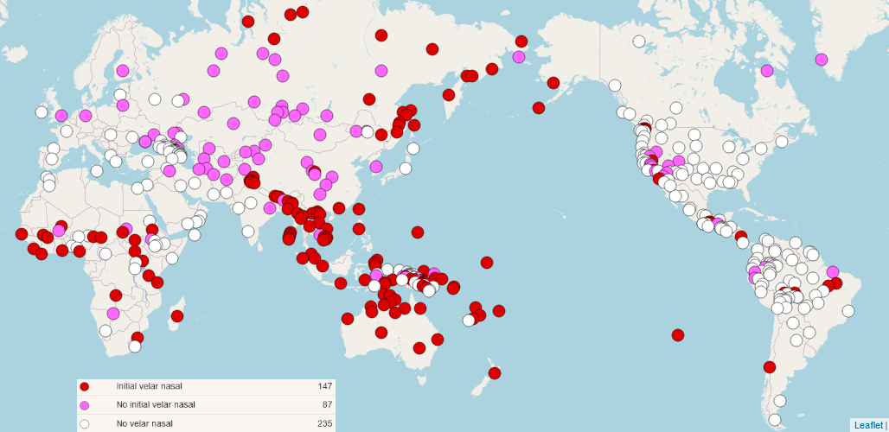
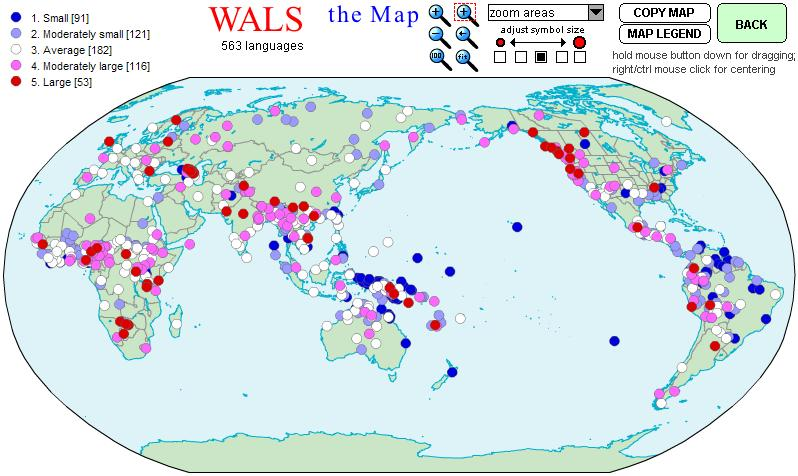
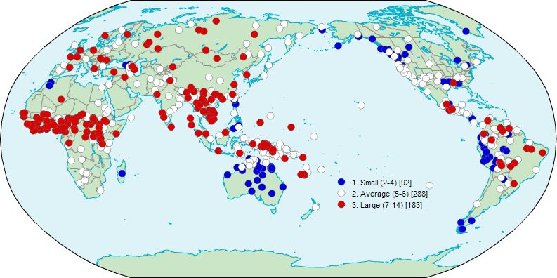
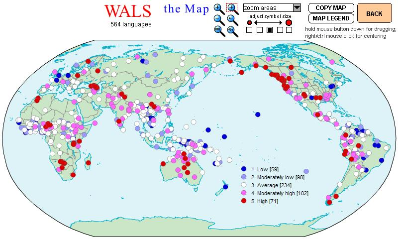

4 Aufgabenbereich der Phonemik
Die Phonemik erforscht Lautsysteme. Ihre Aufgabe besteht also darin, “die Beziehungen der Laute einer gegebenen Sprache zueinander zu analysieren, um so das Lautsystem zu beschreiben.” (SSM 1: 2) In der Tagmemik, einer wichtigen Richtung des amerikanischen Strukturalismus (Hauptvertreter K. L. Pike), werden alle sprachlichen Einheiten unter drei Gesichtspunkten untersucht:
Opposition,
Variation und
Distribution.
4.0.1 Opposition
Die Wortpaare (oder besser: Lautfolgen) in den folgenden Beispielen unterscheiden sich jeweils nur durch einen Laut. Diejenigen Laute, die sich voneinander unterscheiden (also distinktive phonetische Merkmale aufweisen), stehen in Opposition (nach einer anderen Ausdrucksweise “in paradigmatischem Kontrast”) zueinander, womit gesagt sein soll, daß sie bedeutungsunterscheidende Funktion haben.
Deutsch: [lant] “Land” vs. [vant] “Wand”
\[ \frac{[lant]}{[vant]} \]Slowenisch: [ko:s] “kos” (Stück) vs. [vo:s] “voz” (Wagen)
\[ \frac{[ko:s]}{[vo:s]} \]Englisch: [fɪʃ] “fish” (Fisch) vs. [dɪʃ] “dish” (Gefäß).
\[ \frac{[fɪʃ]}{[dɪʃ]} \]
Somit müssen [l] und [v] im deutschen Beispiel, [k] und [v] im slowenischen und [f] und [d] im englischen jeweils zwei Phonemen zugeordnet werden: in (8) den Phonemen /l/ und /v/, in (9) den Phonemen /k/ und /v/ und in (10) den Phonemen /f/ und /d/.
Opposition ist eine paradigmatische Beziehung, Kontrast dagegen eine syntagmatische. Eine Opposition ist eine symmetrische Beziehung zwischen sprachlichen Lauten. In den Lautfolgen der Wörter <fast> und <Rast> steht der Obstruent [f] in Opposition zum Liquid [R] und umgekehrt. Kontrast ist dagegen eine asymmetrische Beziehung zwischen sprachlichen Lauten (vgl. Eisenberg 1998: 88). In einer Form wie <Frau> steht der Liquid /r/ in Kontrast zum Obstruenten /f/, während der Obstruent /f/ in dieser Position nicht in Kontrast zum Liquid /r/ stehen kann, da eine (einsilbige) Form wie [rfao] nicht vorkommt. In anderen Umgebungen kontrastiert der Obstruent durchaus mit dem Liquid, z.B. in [Wurf], aber der Liquid nicht mit dem Obstruenten [Wufr]. Beide Lautfolgen (d.h. [fr] und [rf]) sind somit an unterschiedliche Kontexte gebunden. Der Kontrastbegriff ist die Grundlage für die Ermittlung der phonotaktischen Kombinationsmöglichkeiten (Lautkombinatorik) in einer Sprache. Als operationale Verfahren zur Ermittlung einer Opposition verwenden wir die Kommutations- oder Substitutionsprobe, zur Ermittlung eines Kontrastes dagegen die Permutations- oder Verschiebeprobe. Die in den oben angeführten Beispielen durchgeführte Kommutationsprobe nennt man übrigens auch den Minimalpaartest. (vgl. auch in der Dudengrammatik (Drosdowski 1995 : 32-33) über die funktionalen Eigenschaften Opposition und Kontrast am Beispiel des Wortes <Markt>).
4.0.2 Variation
Zwei verschiedene Laute einer Sprache stehen nicht immer in Opposition zueinander. Können verschiedene Laute nicht als Phoneme eingeordnet werden, dann besteht die Möglichkeit, dass es sich um Varianten eines einzigen Phonems (auch Allophone genannt) handelt. Phonemvariation kann frei oder stellungsgebunden sein.
- Deutsch: [reː.ɡən] vs. [Reː.ɡən] vs. [ʁeː.ɡən] “Regen”
- Slowenisch: [ta.nək] tanek “dünn”, masc. vs. [taŋ.ka] tanka “dünn”, fem.
Im deutschen Wort <Regen> (11) kann das Phonem /r/ verschiedentlich realisiert werden, ohne dadurch die Bedeutung der Lautfolge zu verändern. Im Deutschen sind die drei r-Laute [r], [R] und [ʁ] freie Varianten eines einzigen Phonems, d.h. fakultative Allophone des Phonems /r/. Auch im Slowenischen können die oben genannten r-Laute frei variieren, ohne die Wortbedeutung zu verändern. In der slowenischen Standardsprache ist allerdings im Unterschied zur deutschen nur das alveolar apikale [r] üblich, das auch als Zungenspitzen-r bekannt ist. In einer anderen Sprache können verschieden realisierte r-Laute allerdings auch in Opposition zueinander stehen und somit als zwei verschiedene Phoneme eingeordnet werden (z.B. im Spanischen ein langer und ein kurzer r-Laut).
Das Phonem /n/ wird im Slowenischen (12) je nach Lautumgebung als dental-alveolares [n] oder als velar-postdorsales [ŋ] realisiert. Vor einem Vokal wird beispielsweise die erste Variante ausgesprochen, vor den velaren Obstruenten [k], [g] und [x] die letztere (Toporišič 21991: 71). Das Phonem /n/ weist demnach im Slowenischen (neben anderen hier nicht aufgeführten) zumindest zwei stellungsbedingte Allophone (positionsabhängige, stellungsgebundene oder kombinatorische Allophone) auf. Im Slowenischen sind die beiden Allophone komplementär verteilt, d.h. daß das [n] nicht in allen Lautumgebungen vorkommt, in denen [ŋ] auftritt, und umgekehrt.
Auch im Deutschen kommt der velare Nasalkonsonant [ŋ] ebenfalls nicht in allen Lautumgebungen vor (wie im Slowenischen ist er im Silbenanlaut ausgeschlossen), aber an der Silbengrenze zwischen Vokalen steht er in Opposition zum alveolaren Nasalkonsonant [n] (vgl. <Wanne> vs. <Wange>). Die Tatsache, dass mit Hilfe eines Minimalpaartests eine Opposition zwischen den beiden deutschen Nasalkonsonanten gefunden werden konnte, kann man als Argument für die Unterscheidung zweier Phoneme werten. Dagegen spricht, dass der velare Nasalkonsonant in weniger Lautumgebungen vorkommt als der alveolare Nasalkonsonant.
Der phonetische Unterschied in slowenischen Beispiel (12) ist demnach durch die Lautumgebung bestimmt. Man kann also von der lautlichen Umgebung her schließen, welchen phonetischen Wert das Phonem /n/ in dieser Umgebung hat. Somit sind die beiden Laute (Phone) im Slowenischen Varianten einer Lauteinheit (eines Phonems), und es genügt, ein einziges phonemisches Zeichen /n/ für beide phonetischen Varianten [n] und [ŋ] anzusetzen. Im Slowenischen wird dieses Verhalten auch in der Ortographie (Rechtschreibung) ausgedrückt, denn beide Realisierungsformen des Phonems werden durch das gleiche Graphem wiedergegeben (auch in Eigennamen, vgl. (13)).
- <Ana> vs. <Anka>.
Im Deutschen spricht die Orthographie nicht dafür, die beiden Nasalkonsonanten einem einzigen Phonem zuzuordnen, denn die beiden Laute werden im einheimischen Wortschatz durch unterschiedliche Grapheme wiedergegeben: so wird der alveolare Nasalkonsonant mit dem Graphem <n> wiedergegeben (wie z.B. in <Biene, Wanne>), während dem velaren Nasalkonsonanten das Graphem <ng> zugeordnet wird (wie z.B. in <Wange, Klinge, Zunge>). Die beiden deutschen Nasalkonsonanten könnten eher als zwei verschiedene Phoneme gewertet werden, die beiden slowenischen Nasalkonsonanten dagegen eher als ein Phonem (mit stellungsbedingter Phonemvariation).
4.0.3 Distribution
Beim Vergleich zweier Sprachen kann man oft feststellen, dass in beiden zwar derselbe Laut (oder zwei sehr ähnliche Laute) vorkommt, aber jeweils in unterschiedlicher Position. Der betreffende Laut hat in beiden Sprachen also eine unterschiedliche Verteilung oder Distribution. Dieser Umstand soll am Beispiel des velaren Nasalkonsonanten illustriert werden.
Der velare Nasalkonsonant [ŋ] kommt in der deutschen Standardsprache in den folgenden Positionen vor:
im Wort- und Silbenauslaut nach ungespannten Vokalen (z.B. <Ding, eng, Gang, Gong, Dung>);
im Wort- und Silbenauslaut als Folge der Schwa-Tilgung und der Assimilation nach [g] und [k] in derselben Silbe (z.B. <fragen, packen>);
im Silbenauslaut vor [k] im Anlaut der nächsten Silbe (z.B. <trin-ken>);
im Silbenauslaut vor [g] im Anlaut der nächsten Silbe, aber nur in Lehnwörtern (z.B. <Tan-go, Un-garn, Lin-gu-ist>);
im Wort- und Silbeninlaut vor [k] in derselben Silbe (z.B. <Schank>);
im Inlaut als sogenanntes Silbengelenk (d.h. gleichzeitig im Auslaut der ersten Silbe und im Anlaut der zweiten) vor Schwa [ə] (z.B. <hängen>) oder als Folge von Assimilation vor sonantischem [l̩] (z.B. kling(e)ln).
In der slowenischen Standardsprache tritt der velare Nasalkonsonant [ŋ] in den folgenden Positionen auf:
im Silbenauslaut nach ungespannten Vokalen vor [g], [k] und [x] in der nächsten Silbe (z.B. <An-hovo, Kon-go, Can-kar>);
im Silbeninlaut nach ungespannten Vokalen vor [k] in derselben Silbe (z.B. <tank>).
Aus dieser Gegenüberstellung ist ersichtlich, daß die Distribution des velaren Nasalkonsonanten im Slowenischen eingeschränkter ist als im Deutschen, denn im Slowenischen kann er nicht stehen:
im Silben- oder Wortauslaut, wenn kein [k] in derselben oder der nächsten Silbe folgt;
im Inlaut vor Schwa [ə] oder sonantischem [l̩];
im Auslaut nach [g] und [k] (d.h. aufgrund von Schwa-Reduktion und regressiver Nasalassimilation an einen velaren Obstruenten wie im deutschen Verb <fragen>).
Tabelle 2: Distribution des Nasalkonsonaten [ŋ] im Deutschen und Slowenischen
| Deutsch | Slowenisch | |
|---|---|---|
| Wort- u. Silbenanlaut | ||
| Wort- u. Silbeninlaut | vor [k] | vor [k] |
| Wortinlaut (Silbengelenk) | vor [ə] und [l̩] | |
| Silbenauslaut | Vokal: vor [k] |
Vokal: vor [k], [g], [x] |
| Wortauslaut | nach [g] und [k] in unbetonter Silbe (bei Schwa-Tilgung) |
In einem Fall ist die Distribution des velaren Nasalkonsonanten im Deutschen jedoch eingeschränkter, denn im Slowenischen kann der velare Nasalkonsonant vor [x] in der nächsten Silbe auftreten, im Deutschen jedoch nicht.
Beide Sprachen haben u.a. gemeinsam, daß der velare Nasalkonsonant nicht im Silbenanlaut vorkommen kann. Diese Möglichkeit besteht in anderen Sprachen, z.B. im Kulunge, einer Sprache Nepals (SSM 1: 3).
Im Rahmen der Lautdistribution wird auch die Häufigkeit des Vorkommens eines Lautes untersucht, anhand derer sich oft charakteristische Unterschiede zwischen Sprachen feststellen lassen (SSM 1: 3). So tritt z.B. der stimmhafte postalveolare Frikativ [ʒ] im Deutschen nur in wenigen Lehnwörtern auf (z.B. <Genie, Garage>) und hat daher eine eher periphere Stellung im deutschen Phonemsystem. Im Französischen oder im Slowenischen tritt dieser stimmhafte Frikativ jedoch in einer viel größeren Anzahl von Wörtern auf und gehört eher zum Kern des französischen bzw. slowenischen Phonemsystems (z.B. franz. <je> “ich”, <jour> “Tag”, <pigeon> “Taube”; slow. <žena> “(Ehe)frau”, <žoga> “Ball”, <žaba> “Frosch”).
4.0.4 Phonem- und Silbeninventare
Zur Orientierung sollen einige Angaben zur Phoneminventargröße herangezogen werden. In der Untersuchung von Ian Maddieson (Consonant Inventories, In: Wals 2005) findet man folgende Angaben zur Größe von Konsonanteninventaren in den Sprachen der Welt (gemeint sind Konsonantenphoneme):
| Consonant Inventory Size | ||
|---|---|---|
| 1. | Small | 91 |
| 2. | Moderately small | 121 |
| 3. | Average | 181 |
| 4. | Moderately large | 116 |
| 5. | Large | 53 |
| @ | Total | 562 |
Die typischere Konsonanteninventargröße liegt in den unteren Zwanzigern, wobei der Mittelwert für die 562 Sprachen 22,7 beträgt, der Modus 22 und der Median 21. Konsonanteninventare in der Nähe dieser Größe (22 ± 3) wurden als durchschnittlich kategorisiert, und der Rest unterteilt in die Kategorien klein (von 6 bis 14 Konsonanten), mäßig klein (15-18), mäßig groß (26-33) und groß (34 oder mehr Konsonanten).
Slowenisch kann wie Deutsch oder Britisches Englisch in die Gruppe mit durchschnittlich vielen Konsonantenphonemen (»average«) eingeordnet werden (19 Konsantenphoneme: p, t, k, b, d, g, f, v, s, z, s, S, j, Z, x, m, n, r, l).
Rotokas (West Bougainville; Papua-Neuguinea) hat nur sechs Konsonanten: /p, t, k, b, d, g/. !Xóõ (Southern Khoisan; Botswana) hat 122 Konsonanten, hauptsächlich weil es sehr viele verschiedene Klicklaute gibt, mit denen ein Wort beginnen kann.

In Maddieson (in: Wals 2005) finden wir folgende Angaben zur Größe von Vokalinventaren (gemeint sind Vokalphoneme):
| Vowel Quality Inventory | |||
|---|---|---|---|
| 1. | Small vowel inventory | (2-4) | 92 |
| 2. | Average vowel inventory | (5-6) | 288 |
| 3. | Large vowel inventory | (7-14) | 183 |
| § | Total | 563 |

Der Umfang des kleinsten erfassten Vokalqualitätsinventars ist 2 und des größten 14.
Es gibt 4 Sprachen in der Stichprobe mit nur zwei kontrastierenden Vokalqualitäten. Ein Beispiel für dieses Extrem ist Yimas (Lower Sepik-Ramu; Papua-Neuguinea).«
Nur eine Sprache in der Stichprobe, Deutsch, verwendet 14 Vokalqualitäten (i, I, e, E, a, A, O, o, U, u; y, Y, 9, 2; die Phonemvarianten @ in bitte und 6 in besser nicht berücksichtigt) »und nur 2 verwenden 13 Vokalqualitäten, nämlich die hier enthaltene Variante des britischen Englisch and Bété (Kru, Niger-Congo; Côte d’Ivoire).
Deutlich mehr Sprachen haben einen Bestand von fünf Vokalen als jede andere Zahl – 188 oder etwas mehr als ein Drittel. Die zweithäufigste Inventargröße sind sechs Vokalqualitäten mit 100 Sprachen (oder 17,8% der Stichprobe).
Vokalqualitätsinventare mit 5 oder 6 Mitgliedern wurden in der Kategorie „Durchschnitt” zusammengefasst, während solche mit 4 oder weniger als „klein” und solche mit 7 oder mehr als „groß” eingestuft werden. Sprachen mit „durchschnittlicher” Vokalinventargröße machen mehr als die Hälfte der Stichprobe aus (51,2 %), etwa ein Drittel (32,5%) hat „große” Vokalqualitätsinventare und nur 16,3 % haben „kleine” Vokalqualitätsinventare.
Slowenisch verfügt in betonten Silben über 7 verschiedene Vokalqualitäten, die distinktiv genutzt werden (i, e, E, a, O, o, u) und kann damit (mit nur etwa halb so vielen distinktiv genutzten Vokalqualitäten) in dieselbe Gruppe eingeordnet werden wie Deutsch oder Britisches Englisch, die (mit 14 bzw. 13 distinktiv genutzten Vokalqualitäten) am oberen Ende dieser Gruppe anzusiedeln sind.
In unbetonten Silben ist die Anzahl der distinktiv genutzten Vokalqualitäten gewöhnlich kleiner, so auch im Slowenischen (keine hohen oder mittelhohen Vokale i, e, u) und Deutschen (lediglich @, 6).
Konsonanten-Vokal-Verhältnis in den Sprachen der Welt (Maddieson, in Wals 2005):
Das Verhältnis wird einfach durch Division der Anzahl der Konsonanten (C) durch die Anzahl der Vokalqualitäten (VQ) berechnet und wird als C/VQ-Verhältnis bezeichnet.
Die resultierenden Zahlen reichen von einem Tief von nur etwas über 1 bis zu einem Hoch von 29. Der niedrigste Wert unter den 563 Sprachen, für die er berechnet wurde, wird von Andoke (isoliert; Kolumbien) repräsentiert, das 10 Konsonanten und 9 Vokalqualitäten hat. Die höchste Zahl wird von Abkhaz (Nordwestkaukasier; Georgien) repräsentiert, das mit 58 Konsonanten, aber nur 2 Vokalqualitäten analysiert wird. Das Verhältnis bewegt sich somit zwischen 1,11 und 29, aber die häufigeren Werte liegen näher am unteren Ende der Spanne: der Mittelwert beträgt 4,25 und der Median 3,5.
Die Sprachen wurden in fünf Kategorien eingeteilt, basierend auf der Aufteilung des Bereichs in geeignete Schritte unterhalb, nahe und oberhalb des Medians, um ein Histogramm mit annähernd normaler Verteilung zu erstellen. Sprachen mit einem Verhältnis von 2,0 oder weniger wurden als „niedriges” C/VQ-Verhältnis eingestuft. Diejenigen mit einem Verhältnis über 2,0, aber unter 2,75 wurden als „mäßig niedrig” eingestuft. Personen mit einem Verhältnis von 2,75 oder höher aber kleiner als 4,5 wurden als „durchschnittlich”, solche mit Werten von 4,5 oder höher aber kleiner als 6,5 als „mäßig hoch” und solche mit Werten über 6,5 als „hoch” eingestuft. Nur 10 Sprachen haben Verhältnisse von 12 oder höher.«
Slowenisch gehört in die Gruppe »moderately low«, Deutsch und Britisches Englisch aufgrund der vielen distinktiv genutzten Vokalqualitäten in die Gruppe »low«.
| Consonant-Vowel-Ratio | ||
|---|---|---|
| 1. | Low | 59 |
| 2. | Moderately low | 97 |
| 3. | Average | 234 |
| 4. | Moderately high | 102 |
| 5. | High | 71 |
| total | 563 |
